Proprietary to General Electric
Direction 5114043-800, Rev# 9
LightSpeed 3.X Service Methods (Advanced)
Proprietary to General Electric |
Log Viewer provides a common method to review various system files that may be useful in evaluating system performance and/or troubleshooting system problems. It replaces the System Browser at the CT application level of operation. The Log Viewer provides “one-stop” shopping by eliminating the need to remember complex directory structures and paths. The contents of important system files can be display using the browser’s functions and menus. In addition to the basic viewing capabilities for this information, the System Browser also provides advanced information, processing and functional linking capabilities.
The Log Viewer is web based. It utilizes the Java language for much of its functionality and user interface. This allows for future expansion.
Starting from the Service desktop Home Page Tab, select the Error Logs tab, and then select System Browser from the list of file options. See Illustration 1. If the CT applications are not up, bring them up by typing st in the console window, and then select service desktop.
Illustration 1: Browser Home and Error Log Tabs
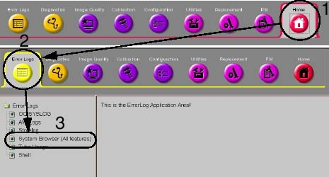
Once the Log Viewer starts, a new window (HTML Page) is opened. By default, gesyslog should be selected and the logs for today should be displayed in tabular form in the display area. By default, the last messages in the gesyslog should be displayed.
Illustration 2: System Browser (Default) Home Page
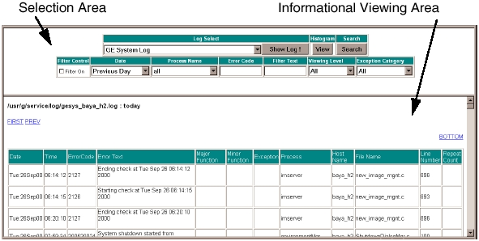
The viewer window is divided into two frames. Starting from top to bottom, they are the “selection area” and the “informational viewing area”. The selection area is used to select the log to be viewed. The informational viewing area is where the log is actually displayed.
In troubleshooting situations when Linux (or IRIX for systems with an Octane) is up but applications are not, system browser can be used instead of log viewer. To start system browser, do the following:
Open a shell by selecting [LINUX SHELL] (or [UNIX SHELL] for Octane systems).
At the command line prompt, type: /usr/g/bin/systemBrowser<ENTER>.
System browser is similar to log viewer, but with less functionality. Primary difference is the user interface and list of logs that can be interrogated. System browser provides only a subset of the logs available using log viewer. It is intended to be used only when CT applications cannot be started.
After a log is selected from the pull-down list, you may select one or more of the options displayed as Option window. For example, more than one group of information to be viewed together.
After making option selections, retrieve the buffer page. The button name changes according to the type of information selected in the list. In the case of the GE Message Log, the button name changes to [RETRIEVE BUFFER PAGE] . If Tube Usage is selected, the button reads [SUMMARY] , [DETAIL] , and [CUMULATIVE] .
In the Viewer Selection Area, you may also search for an alphanumeric text string in the currently displayed information.
In the browser’s log selection area, the option to choose several different system logs for viewing is available. See Illustration 3.
Illustration 3: View Selection
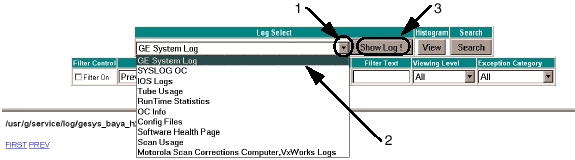
To view a log, use the mouse, click the Log Select drop-down list box, and click on the log name you wish to view. Next click on [SHOW LOG!] . See Illustration 3. The log will be displayed in the viewing area.
The drop-down list gives you the following selections:
GE System Log - gesyslog
SYSLOG OC - The OC computer IRIX Operating System Log
IOS LOGS - Application software logs for: Image Browser, Image Database Read Server, Image Database Write Server, Image Server, DICOM Server, Image Acquisition Server, Networking Server, Film Composer Log, Printer Server, Archive, Display, Filming.
Tube Usage - Tube slice count and use information for the current and previous x-ray tubes.
Run Time Statistics - DIP (DAS Interface Processor), CAN (HCAN, GCAN), Gantry Temperature, Tube Spits, Rotor Uptime.
OC Info
Config Files - OC Host Configuration File, OC Scan Hardware Configuration File
Software Health Page
Scan Usage
Motorola scan Corrections Computer, VxWorks Logs
In addition to showing a log, Histogram [VIEW] and [SEARCH] are also available.
The entire gesyslog displays, starting with the last page message first. There should be a hyperlink to the TOP of the page, when you scroll to the bottom. The PREV, FIRST and LAST links are enabled (if the gesyslog is huge). Clicking on the [TOP] link displays the first few messages in log. If the [PREV] , [FIRST] , [LAST] links are displayed, click on them to view the next set of messages. Selecting [PREV] displays the previous records for the gesyslog file, if it exists. [LAST] takes you to the end of the log, where you should find the text “A New gesylog file is being created.” You will find gesyslog located in the following file path:
/usr/g/service/log/gesys_<suite name>_oc.log
After the user selects the GE System Log, the entire log is read and then divided into ‘pages’ of 1000 lines each. Each ‘page’ of the log is then displayed in the Option: window using the following format:
Pg # :Day of Week mmm dd hh:mm:ss yyyy
Select one or more of the pages within the option window, and then click [RETRIEVE BUFFER PAGE] . This allows you to quickly move to specific dates or times of interest.
You can search within the currently displayed pages for any alphanumeric string entered in the search field. The search field is case sensitive.
“Search” displays how many occurrences of the search string were found in that section(s) of the log in a status line.
Search Status: Found XX match(s) of <search string>
Illustration 4: GE Message Log Search Example.
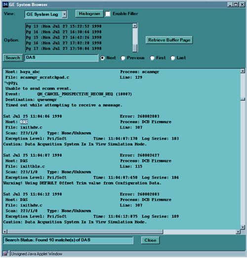
Histogram provides a bar graph histogram of the software processes reporting errors in the GE Message Log. The size of the bars and the numbers to the left of the bars indicate the number of each item that was found in the log. The histogram function for gesyslog always operates upon the ENTIRE gesyslog, not just the retrieved pages.
By clicking on Histogram’s [VIEW] button and choosing a message view, you produce a bar chart histogram of the entire gesyslog. You are given three types of messages (buttons) on which to base the histogram (See Illustration 5):
[ERROR NUMBER] - plot ermes messages by occurrence
[PROCESS NAME] - plot ermes messages by process
[CODE MODULE] - plot ermes messages by module
Illustration 5: Error Numbers Histogram - Example
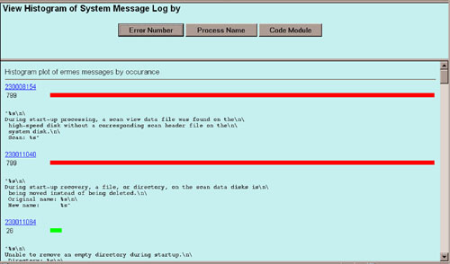
Each row contains three different pieces of information:
Number of occurrences of that message in the log. The information is displayed in the form (XX)
The name of the item found during the generation of the histogram. For example, the names reported in the gesyslog Process: field.
A resultant bar graph. When the histogram is displayed, the messages with the largest number of occurrence are placed at the top.
When the histogram is displayed, you can cursor select either the histogram bar or message number to display the textual message from the log.
If Filter On is checked, the selected log displays according to the conditions specified in the Filter Control row.
| FILTER CONTROL | DATE | PROCESS NAME | ERROR CODE | FILTER TEXT | VIEWING LEVEL | EXCEPTION CATEGORY |
|---|---|---|---|---|---|---|
| x Filter ON | All Today Previous 3 days Previous 10 days Previous day Past hour | afViewer afQueueMgr arserver arsjob avViewer1 browser cupMonitor dailyPrepRx dataacq dbrserver dbwserver dms environmentMgr examRxDisplay examRxDisplayMgr fwmgr imagecreate igctrl imserver prsserver queuemgr> reconMgmt reconmgr retroRecon scanfilemgr scanmgr sdcctrl scanRx | Text | Text | All Operator Service Programmer | primary prisev prisoft secondary secsoft null |
When you select [SYSLOG OC] and click [SHOW LOG!] , you can choose which specific SYSLOGS to view. Use the drop-down list box to make your selection and choose [VIEW] .
Illustration 6: SYSLOG Drop-Down List
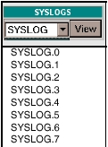
The SYSLOGS are found within the path /var/adm. If a log is present and is of size > 0 bytes, its contents display. Otherwise you will get an error message saying that the specified log-file has zero contents.
If you select Search, the text in the message that matches the entered text displays in the log viewer.
When you select [IOS LOGS] and then [SHOW LOG!] , a new frame is opened. A pull-down in the frame lets you select which specific log file to display.
Illustration 7: IOS Logs Drop-Down List
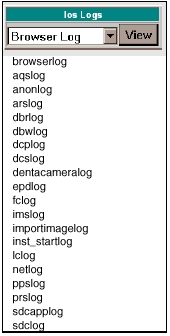
The IOS log files are created and updated by various scanner application software processes. The IOS Logs are normally found within the path /export/home/sdc/logfiles. If a log is present and is of size > 0 bytes, its contents display. Otherwise you see an error message stating that the specified log-file has zero contents.
If you select Search, the log viewer displays the text in the message that matches the entered text.
When you select [TUBE USAGE] and then [SHOW LOG!] , a new frame is opened. Within the new frame is a list of tube usage files presently available for viewing. The tubes files are displayed from newest to oldest, top to bottom respectively. Three different views of information can be generated by following the hyperlink: Summary, Details, and Cumulative Statistics. See Illustration 8.
Illustration 8: Tube Usage Screen - Example
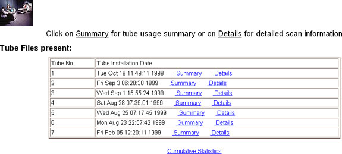
For Tube Warranty purposes, “Warranty Effective Slices” is the correct number to report upon tube unit failure.
The Tube Usage Details information provides identification, usage and scan information. Scan information lists the types and number of scans taken on unit being displayed. An example is provided in Illustration 9.
Illustration 9: Tube Usage Detail - Example
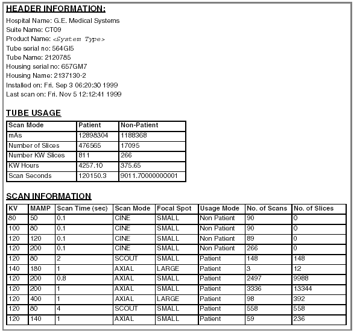
The Tube Usage Cumulative Information displays the totaled tube usage information for all tubes that have been installed on the system. Refer to Illustration 10 for an example of the display.
Illustration 10: Tube Usage Cumulative Statistics - Example
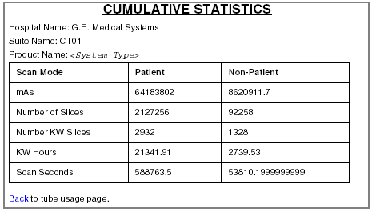
Runtime Stats allows you to display statistical information that has been gathered by different subsystems in the scanner. Only one category can be selected at a time for display.
Illustration 11: Run Time Statistics Selection (DIP Stats Shown)
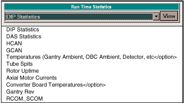
Several examples of the various statistic screens follow.
DIP STATISTICS
DIP statistics is information associated with the success or failure of data to be transferred across the Slip Ring.
Illustration 12: Run Time Stats DIP Statistics - Example.
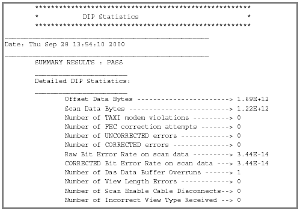
CAN BUS STATISTICS
The CAN Bus is the communications channel used between the OBC/HEMRC Control board, where the OBC end of the interface lines originate to the DAS - DCD, HEMRC and the Collimator CCB.
Illustration 13: HCAN Statistics - Example
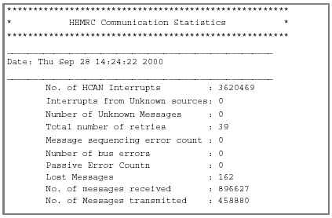
When you select [OC INFO] and then [SHOW LOG!] , a new frame for OC Info is opened within the current window. “OC Info” executes basis Linux (or IRIX) commands to gather information used for display. To use, make a selection and select [VIEW] . The associated Linux (or IRIX) command is executed and the output is directed into the frame immediately below, as HTML (See Table 1).
Illustration 14: OC Info Selection (Showprods Shown)
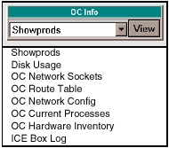
The command results available in this area are:
Table 1: OC Info Commands
| OC INFO LIST ITEM | ACTION (EQUIVALENT IRIX COMMAND) |
|---|---|
| Showprods (System Software Revisions) | showprods |
| Disk Usage: | df |
| OC Network Sockets: | netstat -ian |
| OC Route Table: | netstat -r |
| OC Network Conf | ifconfig |
| OC Current Processes | ps -aef |
| OC Hardware Inventory: | hinv |
| ICE Box Log |
Refer to Illustration 15 for an example of OC Network Sockets output.
Illustration 15: OC Network Sockets - Example
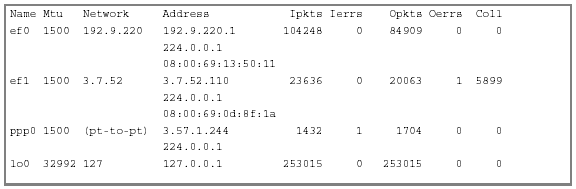
When you select [CONFIG FILES] and then [SHOW LOG!] , a new frame for Config Files is opened within the current window. “Config Files” executes basis IRIX commands to gather information used for display. To use, simply make a selection and select [VIEW] . The associated IRIX command (see Table 2) is execute and the output is directed into the frame immediately below as HTML.
The System Browser has the capability of viewing some of the routinely referenced scanner configuration files used in gathering data about the system.
Illustration 16: Config Files Selection (Info File Shown)
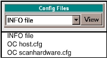
Refer to Illustration 17 for an example of the INFO file result.
Table 2: OC Info Commands
| CONFIG FILES LIST ITEM | ACTION (EQUIVALENT IRIX COMMAND) |
|---|---|
| OC host.cfg | cat /usr/g/config/host.cfg |
| OC scanhardware.cfg | cat /usr/g/config/scanhardware.cfg |
| INFO file | cat /usr/g/config/INFO |
Illustration 17: INFO File - Example
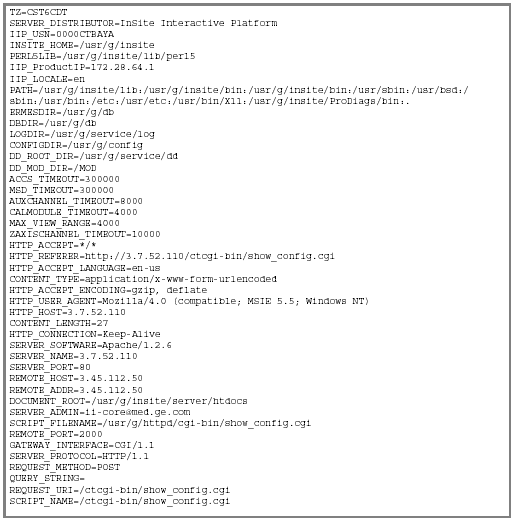